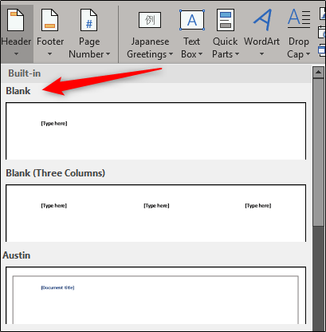

Bine ați venit într-un loc unde puteți învăța funcționalitățile de bază din Microsoft Word!
- Mergi la „Insert”.
- Alege „Header” sau „Footer”.
- Scrie ce vrei să apară (nume, titlu, dată etc.).
Anteturile și subsolurile sunt utile pentru a adăuga informații repetitive, precum titlul documentului, numele tău sau numerotarea paginilor. Le poți personaliza separat pentru paginile pare și impare sau pentru prima pagină.
